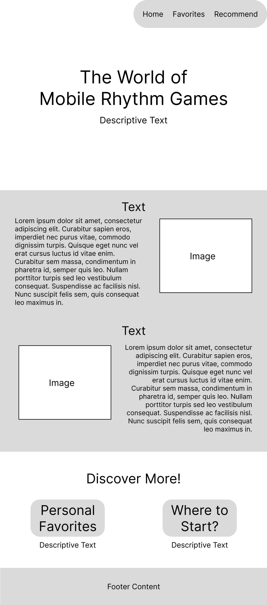
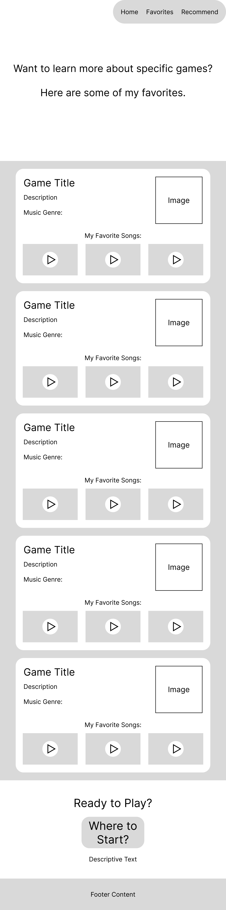
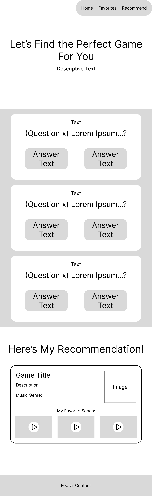

Final Project Proposal
Topic: Mobile Rhythm Games: what they are, why they're worth checking out, and where to start.
Audience: For people interested in the rhythm game genre, but unsure of where to start. Also for people interested in video games in general.
Design & Style: Clean & simple, with fun images and details off to the side to accent the pages. Color palette is primarily black & white, with lighter shades of blue and purple for some variety that isn't too distracting (may change).
Design & Style Inspirations:
Scope: 3 Sections: 1. "Home" page for introducing the theme of the website, 2. "My Favorites" page that describes some rhythm games I like, with options to get more details about each game, 3. "Where to Start" page that features a simple choice system to recommend users a rhythm game. Contents of the pages may be somewhat altered in the final version.
Extras:
- Event-driven DOM Manipulation (certain)
- React Library (may change)
Wireframes:
Page 1: Home Page

Page 2: Personal Picks/Favorites Page

Page 3: User Recommendation Page
